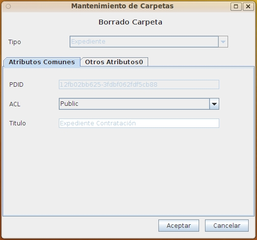

Al seleccionar el borrado de una carpeta se presentará esta pantalla que muestra toda la información de la misma, de forma que pueda confirmarse antes de borrar que es el elemento correcto.
Una carpeta no podrá borrarse si el usuario no tiene permisos suficientes sobre la misma o sobre alguno de los objetos contenidos en la misma.

Si se acepta el borrado, la carpeta y todas las carpetas incluidas se borran definitivamente. Los documentos contenidos pasa a la papelera, desde donde podrán recuperarse posteriormente o borrarse definitivamente
Ver: Papelera